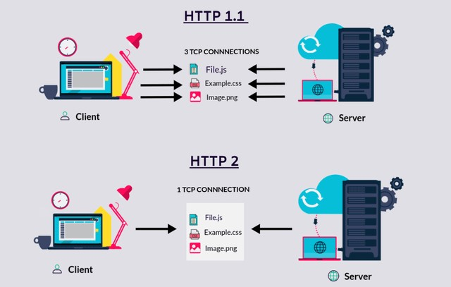

HTTP 1.1 vs. HTTP 2
Introduction
Development Journey: Advancement from HTTP/1 to HTTP/2
In 1989, Tim Berners-Lee invented HTTP. HTTP/1.1 was its 1st
standardized version that was available for use in the year 1997 for
the end-users. This version presented considerable performance
optimization over its precursors and changed how communication was
handled between clients and servers. However, its key qualities opened
the doors to many performance and API security loopholes.
HTTP/1 was known to have poor response time. With websites becoming
more resource-intensive, the protocol was losing its efficiency. It
progressively became essential to minimize latency and boost page load
speeds.

Defining HTTP
HTTP (Hypertext Transfer Protocol) is a set of rules that runs on top of the TCP/IP suite of protocols and defines how files are to be transferred between clients and servers on the world wide web.
Evolution of HTTP protocols
HTTP has evolved into various versions over time, with HTTP 1 being the traditional protocol and HTTP 2 being the most recent iteration. To optimize website performance, web developers and businesses must understand the differences between these protocols.
Importance of understanding the differences
The advantages and drawbacks of each protocol can be discovered by
delving into the distinctions between HTTP 1 and HTTP 2. By using this
knowledge, we can make informed decisions that improve user
experience, speed, and security on the web.
Performance Comparison
Server push:
• Typically, a server only serves content to a client device if the client asks for it. However, this approach is not always practical for modern webpages, which often involve several dozen separate resources that the client must request. HTTP/2 solves this problem by allowing a server to "push" content to a client before the client asks for it. The server also sends a message letting the client know what pushed content to expect – like if Bob had sent Alice a Table of Contents of his novel before sending the whole thing.
Header compression:
• Small files load more quickly than large ones. To speed up web performance, both HTTP/1.1 and HTTP/2 compress HTTP messages to make them smaller. However, HTTP/2 uses a more advanced compression method called HPACK that eliminates redundant information in HTTP header packets. This eliminates a few bytes from every HTTP packet. Given the volume of HTTP packets involved in loading even a single webpage, those bytes add up quickly, resulting in faster loading.
Multiplexing:
• The new binary framing layer in HTTP/2 enables full request and
response multiplexing, by allowing the client and server to break down
an HTTP message into independent frames, interleave them, and then
reassemble them on the other end.
• The ability to break down an HTTP message into independent frames
and then reassemble them on the other end is the single most important
enhancement of HTTP/2. In fact, it introduces a ripple effect of
numerous performance benefits across the entire stack of all web
technologies.
Prioritization:
• Once an HTTP message can be split into many individual frames, and
we allow for frames from multiple streams to be multiplexed, the order
in which the frames are interleaved and delivered both by the client
and server becomes a critical performance consideration. To facilitate
this, the HTTP/2 standard allows each stream to have an associated
weight and dependency.
• The combination of stream dependencies and weights allows the client
to construct and communicate a prioritization tree that expresses how
it would prefer to receive the responses. In turn, the server can use
this information to prioritize stream processing by controlling the
allocation of CPU, memory, and other resources, and once the response
data is available, allocation of bandwidth to ensure optimal delivery
of high-priority responses to the client.
Advantages and Disadvantages of HTTP/2
• Naturally, as the updated technology, HTTP/2 brings its fair share of benefits and drawbacks to the cyber world. Below is the list of the advantages and disadvantages of HTTP/2.
Advantages:
• HTTP/2 supports full multiplexing for requests as well as responses
over a single TCP connection. Due to these capabilities, lower page
load times are achieved by removing needless latency and improving the
overall capacity of network alongside its availability.
• Resource usage has increased dramatically for machines processing
requests to deliver media-rich content and complex web designs.
Developers worked hard around optimization hacks, and as a result, the
robust solution of HTTP/2 was obtained. Features, such as server push,
stream dependency and prioritizing, header compression, and binary
format layer, have improved network utilization as the core
advantage.
• The HTTP/2’s ability to transmit more data per client-server
communication cycle greatly improves web performance. As a result,
increased user satisfaction, better SEO, greater productivity, growing
userbase, and improved sales figures can be achieved.
• All modern browsers support HTTP/2 over HTTPS with the SSL
certificate installation. To open HTTPS capable invisible proxy ports
on every relevant port, OWASP ZAP or its alternatives could be used.
Disadvantages:
• While HTTP/2 mitigated the effects of HOL blocking in its
predecessor, TCP-level block still causes problems.
• For client machines operating on a slow network, data packets drop
bit by bit, and the network quality gets degraded to a single HTTP/2
connection. Due to this, the entire process slows down, thereby
blocking a lot of data transfer.
• The cookie security failure is still not addressed in HTTP/2 like
its precursor. Cookies are .txt files containing client data obtained
by the server and website. However, these cookies may get stolen or
tampered with by hackers, who can access personal user data, even
without passwords.
Conclusion
Probably the first step required for improving performance of a web service is to check the network tab. Especially when the service is streaming large chunk of files such as images, or even videos. Luckily this time, instead of implementing Kafka or any other servers, I was able to reduce lots of network latencies with switching to HTTP2 just because previously, the single connection was to created per request but now with all the performance benefits of HTTP2 features, the project run on dev server is much smoother than before and I am satisfied with it. I will post more of what is done to make a better service.